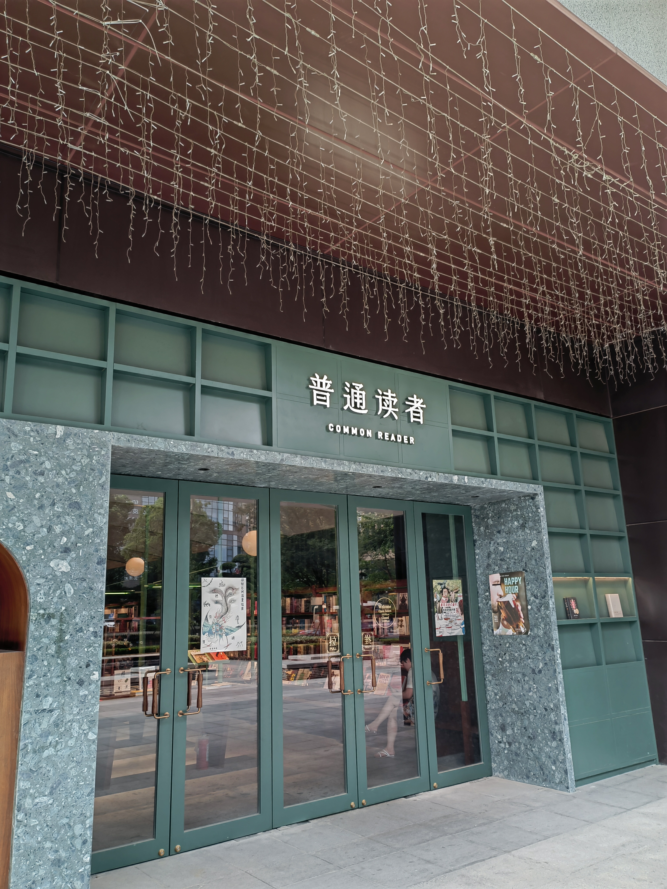

04: What is a Reader? Common, Collective, Fictional, Second-Hand and Online Readers as Constructed Readers
Eve Yi Lin, in dialogue with the READCHINA team
2023-01-30
Readers Are Always Constructed Readers, So Is the Common Reader!
Eve Yi Lin
Is there any difference between a reader and a person who reads? Will a reader stop being a reader at the very moment he/she stops reading? Of course, we can dismiss these questions, arguing that people are rarely that absolutist in their understandings of “readership,” which sounds ridiculous. But the puzzle lurking here still won’t dissipate. Will a reader stop being a reader, then, when he/she reads less often, or less devotedly, or less effectively? If so, how should the standards (of frequency, or devotion, or manner) be set? If we do agree that there has to be a standard beyond which one stops being regarded as a reader, then we already agree that such standards of readership must exist either in clarified or (more often than not) in latent forms. We may then ask: What determines the standard of readership? It could be determined by the collective consensus of social norms, by authoritarian cultural politics, by the preferences and habitus of elite groups who hold large amounts of “cultural capital” in society, as explored by Pierre Bourdieu (2010: 166-168); or even just by an insensitive lousy researcher in her study of reading. In any of these cases, however, it is already indicated that whenever we talk about the reader, “the reader” is always already constructed within distinct cultural, political, social or academic contexts.
With these questions, I suggest that we reconsider the reasons for discussing the reader as a research topic independent from that of reading (act). I am not denying any connections between the reader and reading. On the contrary, I agree that the reader and the reading act are entangled in every imaginable way, as explored recently in the volume The Cultural Sociology of Reading (edited by Thumala Olave, 2022). However, I do want to highlight here that there is no simple, “natural”, or unmediated path from “a person who reads” to “a reader”. In other words, “the reader” denotes a constructed and mediated concept of human identity in society. Likewise, in the realm of human identity, individual or public perceptions matter no less than empirical facts. Therefore, a fruitful angle for studying the reader is to explore how the identity of the reader is established and perceived in concrete social contexts. It will be more fruitful, for example, to explore how the phenomenon of “a person who reads” is mediated into “the reader” in the PRC’s social and cultural environment, rather than simply to equate the reader with “someone who conducts reading” in a take-it-for-granted manner.
In my own study of the PRC’s reading culture, I look at “the reader” as a constructed identity. This concept of identity is embedded in China’s cultural life and reaches large groups of (if not all) people in Chinese society. I also find that this identity concept has been changing constantly, because the perceived status, image, and social/cultural impacts of the reader has been altered drastically during the history of the PRC. For example, the concept of the reader was highlighted in public discourse of the 1950s. It served as a handy tool for official literary criticism to enhance the legitimacy of the new communist regime’s cultural politics. Terms highlighting the collectivity of readership, such as “the mass reader” (qunzhong duzhe 群众读者) and “the worker-peasant-soldier reader” (gongnongbing duzhe 工农兵读者) appeared frequently in official literary discussions, although they did not in fact acknowledge the various cultural needs of different readers or social groups (Hong 2009: 18-23). This perception of the reader identity seems to have gone extreme during the Cultural Revolution, a telling example is the image of “the model reader” of Mao’s, as explored by Lena Henningsen (2022).
A more recent example of a fundamentally new perception of the reader identity appeared during the 1990s. After the Mao Era with its “mass reader” a widespread process of commercialization and consumerization took place in Chinese society. During this transition, the reader, especially in China’s large cities, acquired a new identity as a reader-consumer. This reader-as-consumer identity, I argue, indicates a paradigmatic change from previous perceptions of what a qualifiable “reader” is like. Former readers (the model reader, the mass reader etc.) are all connected to a text-centered reading culture which demanded a serious to worshiping attitude to the text to be read/studied; and their reader identity was granted primarily by the act of deep reading – namely, reading that requires heightened attentiveness, including activities such as meticulous assessment and learning of the content, noting down or checking up textual details, excavating ever more or deeper meanings from the text. The reader-as-consumer, on the other hand, could well be spared those painstaking efforts. A reader-as-consumer is first of all a consumer of books or book-related cultural products for leisure as part of an urban consumerist lifestyle. He/she highlights his/her individual character as a (tasteful, well-cultivated, or well-informed) consumer by relating with book reading.
Nicolai Volland similarly touched on this paradigmatic change, bringing forth the notion of “images of the reader” (2021). In Volland’s terms, one and the older image of the reader that is familiar to people in the PRC could be called the “devoted reader,” or the Reader with a capital letter, who conducts a deep reading with all her earnestness and seriousness. Ideally, the (devoted) Reader immerses him/herself so deeply into the reading text that neither the surrounding noises, nor the uncomfortableness of the material reading environment would affect him/her. The newly emerging reader to be found in today’s highly commercialized bookstore in China, however, is more like a “non-Reader” when seen from the previous standard of readership. The non-Reader can read superficially, absent-mindedly, or he/she may not really intend to read into any text at all. Rather, he/she relishes (narcissistically) on his/her identity that is being highlighted by the acts she conducts in a space for reading – taking selfies, sipping coffee and listening to music while leafing through books half-mindedly, or writing postcards in the bookstore. Moreover, she/he/whoever is ultra-aware of the material surroundings of reading, which is usually set up as a consumerist spectacle. The differentiation Volland made here – so drastic as being called the “Reader” and “non-Reader” respectively – resonates with what I have just argued as a fundamental paradigmatic change of the reader identity in China when the reader-as-consumer appeared as a cultural phenomenon. It also shows that people’s perceptions and imaginations of the reader (and what a reader could do while still being a reader) are always constructed, and that they are still in constant change.
Aside from the former “devoted reader” and the more recent reader-as-consumer, the latest emerging reader-identity that I am currently interested in is what I would call today’s “common reader” (putong duzhe 普通读者). I think this term captures yet another change, or another nuanced re-adaptation of many people’s perceptions and cultural ideals regarding readership in contemporary Chinese society. By “the common reader”, I refer to a perceived readership that goes beyond the leisure, self-indulgent “reader as consumer” that has dominated China’s consumer culture since the 1990s. “The common reader” today returns to more serious personal cultivation and intellectual exercises through reading – at this point the common reader comes back a bit closer to the devoted reader. However, the common reader is not a fervent worshipper of any form of cultural elitism or authorities either. Regarding reading, the common reader has self-confidence, yet in a modest manner, knowing that his or her individual reading tastes and interests are as fully justified as any other cultural elite’s reading lists. Meanwhile, the common reader also keeps distance from consumerist reading fashions. He/she usually is criticizing contemporary consumer culture, albeit he/she has to live in it.

On a less abstract level with less academic self-awareness, yet perhaps more tellingly, this new term of readership is also used frequently by my interviewees from China, many of whom are ordinary urban citizens who had the habit of reading more than average. However, one of the most articulate references to the identity of “common reader” comes from an independent bookstore in Hangzhou, which also names itself “The Common Reader.” In fact, the bookstore did not just invent its name by itself. The name of the shop is a deliberate quote from the British writer Virginia Woolf and her 1925 book of collected essays, titled The Common Reader. In it she wrote,
“There is a sentence in Dr. Johnson’s Life of Gray which might well be written up in all those rooms, too humble to be called libraries, yet full of books, where the pursuit of reading is carried on by private people. ‘… I rejoice to concur with the common reader; for by the common sense of readers, uncorrupted by literary prejudices, after all the refinements of subtlety and the dogmatism of learning, must be finally decided all claim to poetical honours.’ It defines their qualities; it dignifies their aims; it bestows upon a pursuit which devours a great deal of time, and is yet apt to leave behind it nothing very substantial, the sanction of the great man’s approval.” (Woolf 2003: 1)
Woolf’s vision here is reader-centered. The reader defines and decides what reading means to her. Yet it also expresses a sense of intellectual dignity and independence from either (consumerist) trends or elitist cultural authorities (“the dogmatism of learning”). The different (or unorthodox) manners of reading of different readers constantly re-evaluate the significance (“poetic honours”) of a text, yet there is still the pursuit of “poetic honour” in a democratic sense. That the writing of a British modernist writer can convey the new cultural ideals of the reader in today’s Chinese society is both accidental and fitting. It is accidental in that in this specific case, the bookstore owner happens to have been an English major while in college, so that she possesses the background knowledge to convey her bookstore’s cultural ideas. Yet it is also fitting, because after four decades of commercialization in Chinese society, Chinese middle-class consumers seem to be ready to establish their own cultural and intellectual awareness, which is independent and refined enough to embrace the modern-day sensitivity, as was acknowledged in Woolf’s writing.
Response #1: What is a Collective Reader under State Socialism?
Damian Mandzunowski
The type of reading practices I am looking at in my project are officially-organized and guided collective study and reading sessions for workers and cadres at Chinese factories (and other industrial work units) after 1949. All these reading activities were part of the state propaganda system and followed a shared organizational and setup pattern. This pattern evolved with time, based on trial and feedback, but by the early-1960s it found its more-or-less permanent setup. In other words, although always somewhat adapting to local circumstances, collective reading activities occurring at a given moment at two different urban work units in the same city or even province would take place in a highly similar manner. The readers I have the privilege to encounter in my sources are hence actual people from the past. A most typical reader found in my sources would be a factory worker of any level, aged anywhere from their late-teens to their late-fifties, or a cadre of the youth league or party organization set up at the factory. (Oftentimes this could be the same person.) Each of these readers engaged in their shared reading after a physically tiring shift at work. It is difficult not to ask oneself how the group readings they took part in impacted their lives; how their lives continued; how these people would remember taking part in the reading sessions, and if at all. As a result of this clearly circumscribed group of readers—other than in the case described above by Eve Lin where virtually anyone can become a client of a commercial bookstore—there are naturally some reader identities who I encounter much more rarely, or even never: children and the elderly, intellectuals, the petty-bourgeois and capitalists, prisoners, students, patients of mental health institutions, and others. Moreover, one other key element that sets the readers I encounter apart from those discussed above is the aspect of unrestricted leisure reading. Even if one personally enjoyed their weekly reading sessions at their workplace, participation was not really a question of choice: the times, spaces, texts, and ways of reading with others were all predetermined and strictly guided by the party in power. Yet, rather than seeing the numerous and regular mentions of issues with the system of collective reading in the PRC—such as motivating the readers, explaining difficult passages in understandable ways, or ensuring attendance—as occasional peeks at “the reality” behind the scenes of politics, I instead treat all these insights as a polyphonic conversation about the essential role of reading for and within political communication in times of constant change, in line with an argument brought forward recently by Aminda Smith (2021). Official sources do indeed say many things about collective reading; contextualizing and historicizing these conversations shall expand our understanding of the ways in this particular practice of reading works.
Response #2: What is a Fictional Reader?
Lena Henningsen
“I am not reading books in order to live; I live in order to read” (Jin Fan 1980: 16), writes the protagonist in an epistolary novel that circulated clandestinely during the Cultural Revolution, indicating how important reading is to her. She is a devoted reader indeed—albeit not necessarily of the texts that the Communist Party would have assigned her to read. Fiction is one of the sites where the standards of what constitutes a proper reader are being negotiated and constructed. In the PRC, where the government has attempted to create new socialist men, women, and children also through the texts they read (Wagner 1995), this can be observed in particularly clear terms. Much like (allegedly) real people like Lei Feng that are propagated as model readers fictional readers function as models to the readers who are reading the respective text (see also my READCHINA Intervention in Henningsen 2022).
What, then, are fictional readers? When do fictional characters read, where, for what purpose and what impact does that have on them and on the plot in which the reading act is embedded? Once you start to look out for readers in (Chinese) fiction, they are plenty—so how can they be best described, and what meaning do they have? Readers can only be understood by looking at the ways in which reading is rendered in these narratives. There are, broadly, three types of reading and readers in fictional texts: First, sometimes, reading is merely “background noise” to the plot. In these cases, it is mentioned in passing that a character is reading, but hardly any information about the reading act or the text read is spelled out. Here, reading serves to give a scene or a character a vague notion of erudition. Second, a scene is rendered as an elaborate reading act through which a reader is characterized: A fictional character may be immersed in Mao Zedong’s writings attesting to their proper ideological standpoint; another character may read these same texts with a distinct sense of boredom or even contempt pointing out this character’s free roaming spirit; yet another character may recite the poems by Du Fu to act out his or her romantic and poetic nature.
While these reading acts and the texts read characterize fictional persons, they may not primarily be readers. Instead, they may be revolutionaries who also read, young lovers, or counterrevolutionaries (though, to be honest, in the texts I read, counterrevolutionaries don’t read much). Their motifs and the habitus of these three types of readers may vary, yet they are all “devoted readers” by Volland’s definition (2021). Third, some readers could be called “readers by vocation” (or: “readers by calling”). Reading is what makes them human, and/or reading is what propels the plot of the respective story: This could be Zhenzhen in the Cultural Revolution shouchaoben piece Open Love Letters who exclaims “I am not reading books in order to live; I live in order to read” (Jin Fan 1980: 16). Quite fitting for the protagonist of a love story told through letters exchanged among the characters, Zhenzhen is a devoted reader and a writer before anything else. In this text, action unfolds upon reading (see my analysis in Henningsen 2017).
These intense, and devoted, readers have a twofold impact: one onto the fictional narrative and the second one beyond and onto the actual readers of the fictional text. Fictional readers may draw actual readers into a mise en abyme: Readers of the fictional text (who quite likely are devoted readers of fiction themselves) may see themselves mirrored in the fictional readers, intensifying the identification with the fictional characters. As a consequence, fictional readers and their reading (acts) operate as meta-fictional comments reflecting on the nature of reading and of the status of text and reading at any given historical moment. At the same time, readers in fictional texts serve as a bridge between the standard reader established by social norms at any given time and their actualizations, as Lara Yang puts it below: To an extent fictional readers mirror actual readers who leave traces of their reading and of social norms in historical sources.
Response #3: What is a Second-hand Books Reader?
Lara Y. Yang
My research is about second-hand book reading culture in modern China (20th century onwards). In my work, what dogs me most is, as Roger Chartier wrote decades ago, the actualization of “the reader” for historical research (Chartier 1994: 3). As one type of actual reader, second-hand book readers encounter paper-based and used books from which they will draw both scarce materials and contents. In the process of actualization, therefore, on the one hand, we need answers on the connection between the text being read and the media it is/was attached to, both of which actual second-hand book readers will certainly come across while reading a book. In a broader sense, as Nathan Snaza (2019) or William St. Clair (2004) show, no text was ever read without being associated with any type of media or social and political context. Readers read physical books through a distinct type of media, i.e., printed books on paper, electronic books on a kindle, a laptop, or a smartphone; listen to audible books, etc. Second-hand books are fixed entities in which texts and the media, paper, are syncretized. Their materiality, however, varied across time with marks, stains, and traces on pages. Every second-hand book, therefore, is singular, and the readers are essentially designated to collect: they collect either the material of books, or the information in the texts through the lines, or both.
In the modern Chinese context, social roles involved in second-hand book culture include the sellers, buyers, bibliophiles, collectors, librarians, and in most cases, petty dealers, who are often called “scavengers” (jianpolande 捡破烂的) by the “cultured book readers”, a group of individuals who have been called the “book-reading man” (dushuren 读书人). Although conventionally, book sellers and petty dealers were not considered readers, I argue, all above roles are readers. They participate in the dissemination and circulation of second-hand books, and all read the contents, or the materials of the books, or both. In the past two decades since around 2002, I have observed over 50 individuals who have had one or multiple of the above roles. Although their focuses varied, all and every of them read the books they obtained or sold.
From the early 20th century up to now, China, as well as the world, experienced drastic changes in every aspect. Second-hand book reading culture in China, both in terms of the media, the participants, and the cultural sites, accordingly altered. In my research, I divide the second-hand book culture into four periods due to the varied iconic sites for exchanging both the books and ideas. These are the pre-China Bookstore era from around 1900 to 1956, the China Bookstore era from 1957 to 1993, the Panjiayuan era from 1994 to 2002, and the Confucius.com era from 2003 to the present day. In each period, not only did the named sites influence the mechanism of trade, they also deeply impacted the ways that readers read and shared their books and ideas. Meanwhile, the cultural identities of the readers were shaped by changing circumstances. In each period, we can see that certain material conditions have changed in favor of one social group or multiple social groups by the new cultural sites. For instance, in my current study on the “scavengers” in the Confucius.com era (2003 onwards), petty book dealers entered the realm of “book reading man” for the first time thanks to the open access online bibliographical system that was brought by the time of the Internet.
Response 4: What is an Online Reader?
Duncan Paterson
When it comes to online fiction, distributed by platforms such as qidian.com, reading and consumption are sometimes hard to distinguish. Serially published online fiction has a distinct mode of content creation and consumption. From the perspective of the publisher their readers are simply users as with other social network applications or online games. This is visible in the gamification of the reading experiences of unlocking avatars, and application design that focuses on keeping engagement above all else. As users, the consumers of online fiction produce a large body of texts in the form of online commentaries and direct interaction between authors and readers. Reading in this context is far from private. Many users value the anonymity that comes with staring at their mobile phones in public with low visibility of what is displayed on their screens. This allows them to escape into fictional worlds of fantasy literature with often erotic or pornographic content in places where doing so visibly with a paperback would be considered inappropriate. Yet, to the platform operators, readers are as transparent as they can be. Everything about the users’ reading habits, engagement times, location, device etc. is tracked and analyzed. This has led to different censorship practices governing the production of online literature. If reading pornography is bad, doing so in a less visible way is less so.
References
- Bourdieu, Pierre. 2010. Distinction: A Social Critique of the Judgement of Taste. London: Routledge.
- Chartier, Roger. 1994. The Order of Books: Readers, Authors, and Libraries in Europe Between the Fourteenth and Eighteenth Centuries. Stanford: Stanford University Press.
- Henningsen, Lena. 2017. “What Is a Reader? Participation and Intertextuality in Hand-Copied Entertainment Fiction from the Chinese Cultural Revolution.” Modern Chinese Literature and Culture, 29/2, 109-158.
- Henningsen, Lena. 2022. “Chairman Mao’s Good Reader: Mise en abyme in The Diary of Lei Feng.” READCHINA Interventions 3, https://readchina.github.io/interventions/LeiFeng.html, 2022-10-01, last access 2022-11-01.
- Hong, Zicheng 洪子诚. 2009. The History of Literature in Contemporary China 中国当代文学史. Beijing: Beijing University Press.
- Jin Fan 靳凡. 1980. “Open Love Letters” 公开的情书. Shiyue, 1980/1, 4-67.
- Smith, Aminda. 2021. “Long Live the Mass Line! Errant Cadres and Post-Disillusionment PRC History.” Positions: Asia Critique 29/4, 783-807.
- Snaza, Nathan. 2019. Animate Literacies: Literature, Affect, and the Politics of Humanism. Durham: Duke University Press.
- St. Clair, William. 2004. The Reading Nation in the Romantic Period. Cambridge: Cambridge University Press.
- Thumala Olave, María Angélica, ed. 2022. The Cultural Sociology of Reading. Cham: Palgrave MacMillan.
- Volland, Nicolai. 2021. Discussant’s comment in the READCHINA online lecture series “Practices of Reading in the People’s Republic of China.” https://readchina.github.io/2021/01/05/LS_7.html.
- Wagner, Rudolf. 1995. “Life as a Quote from a Foreign Book. Love, Pavel, and Rita.” In Das andere China. Festschrift für Wolfgang Bauer zum 65. Geburtstag, ed. Helwig Schmidt-Glintzer, 463-476. Wiesbaden: Harrassowitz.
- Woolf, Virginia. 2003. The Common Reader. First Series. London: Vintage Classics.